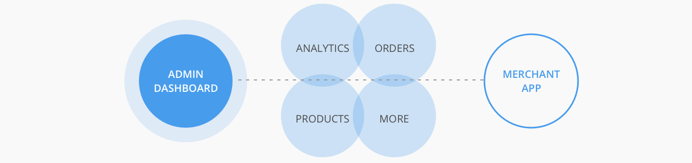
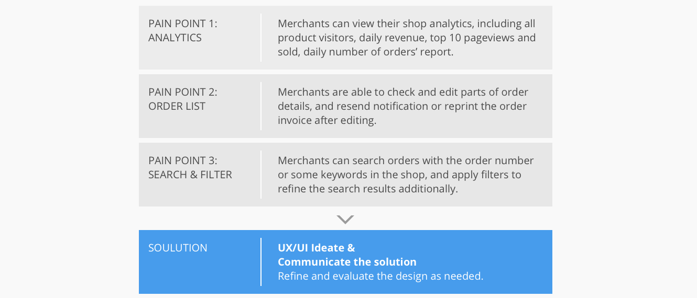
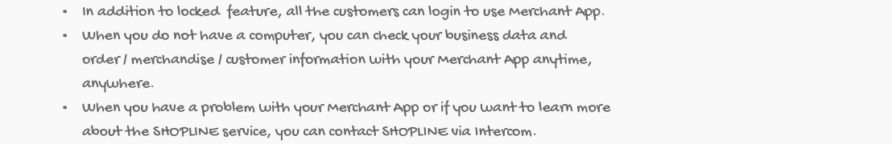
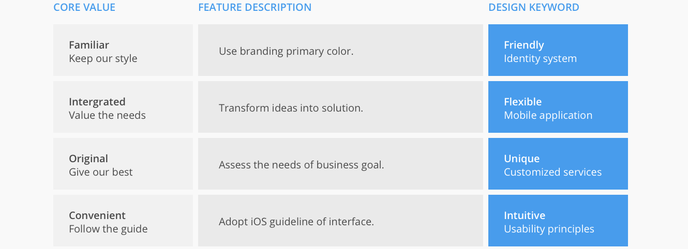
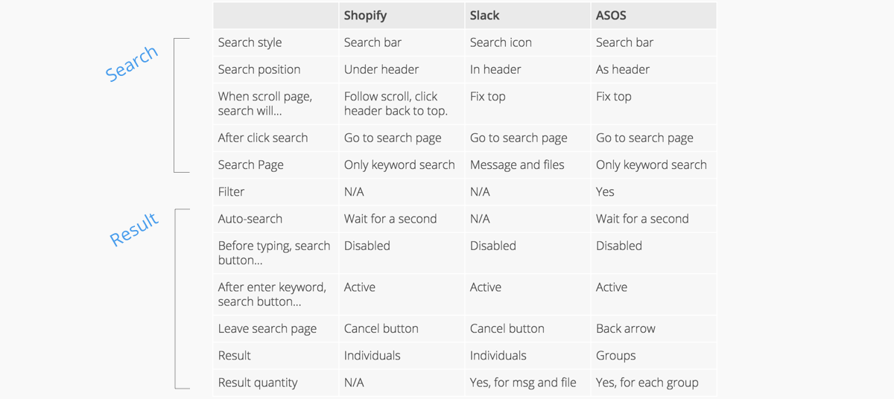
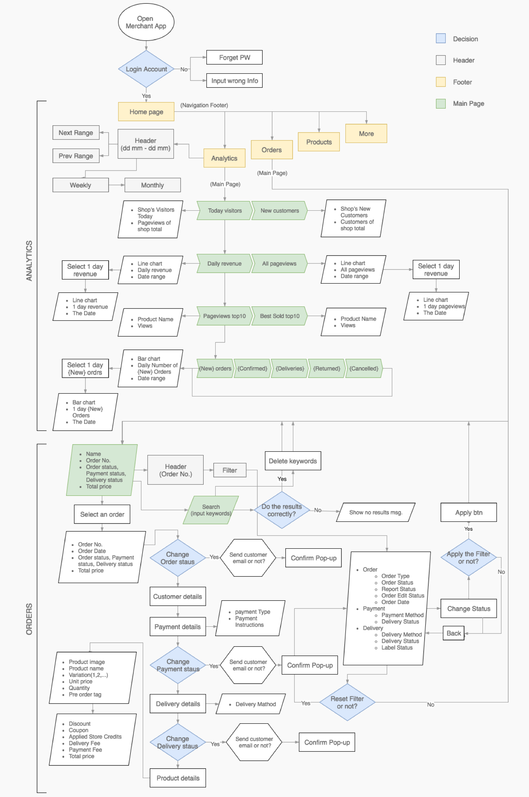
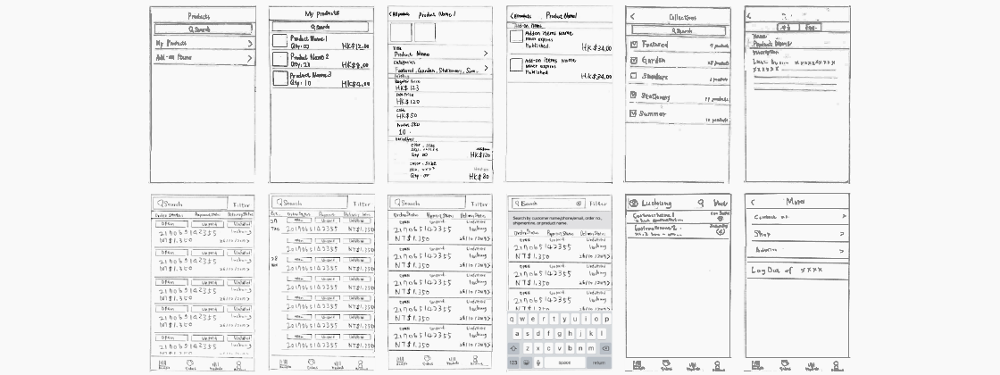
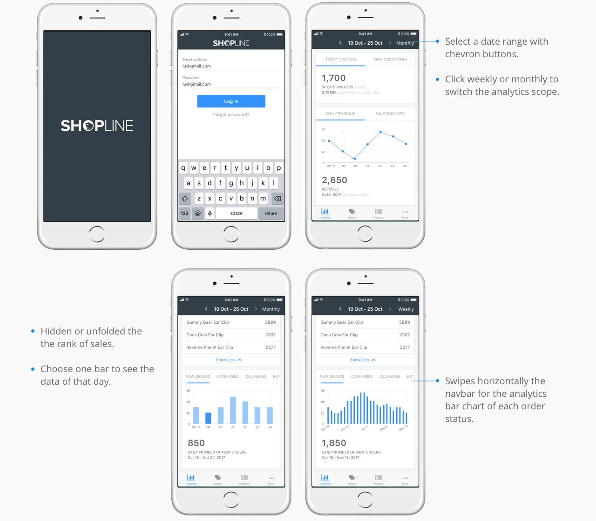
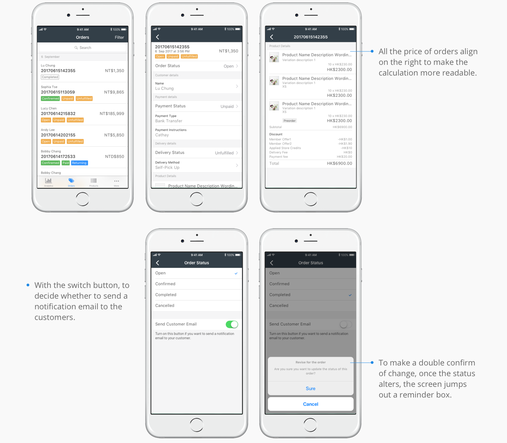
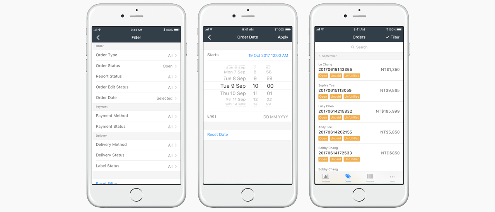

OVERVIEW
The goal of this application project was to built a comprehensive system for managing the online-merge-offline retail. On the front-end, merchants can easily track their orders and plan a sale session for their store with the mobile app. On the back-end, the e-commerce company can learn customer behaviors and needs by the data collected. The app was my first published iOS app and is exemplary of my philosophy for design advocacy.
OBJECTIVE
Design strategy planning, iOS mobile applications.
BACKGROUND
There are four mainly types of feature to SHOPLINE admin platform: Analytics, Orders, Products, and other services. In addition, according to the customer feedbacks reports that as many as 70 percent of customers said they also included key customers, hoping to view these features on a mobile phone. Therefore, the team decided to develop the APP system for these main functions.
PROJECT GOAL
I used the feedbacks of usability testing from our customer which conducted by the development team which users used Merchant App and gave some reviews through the Testflight, and I categorized these feedbacks into three project issue, in order to improve the features with the design strategy.
DESIGN PROCESS
I decided to follow Lean UX Design Thinking process to make sure that my design decisions were making the best practices of agile development, iterative development, user experience, creativity, prototyping and testing shine.

JOB STORIES
I used the feedbacks from our customer that conducted with the Textflight tools, which users would use Merchant app and help us to understand their motivation and desired outcome. I integrated their reviews and needs as following examples.
DEFINE CORE VALUE
>In addition, I decided to follow the principle and belief of the organization, views, and design Merchant App with our core value which represent familiar, integrated, original and convenient. And transform the core values into four design keywords: friendly, flexible, unique, and intuitive.
RELATED RESEARCH
>After defining the customer’s needs and insights, I analyzed the relevant interface, for instance, Shopify, Slack, ASOS as the main reference. For a deeper understanding of the behavior of searching orders and setting filters, I sort out a comparative table of the user interfaces and their task flow.
Then I prioritized each project issue based on its importance to the user as well as its importance to Merchant App. My assumptions about the importance to users were derived from the analysis of our customers testing feedbacks and requirements. Analytics, Order, Search and Filter were developed in the phase one, and they were also core functions of the product. Therefore, I did background research of these features, and studied their user task flow.
Analytics
- For the analytics chart of Total sales and Online Store visits, categorizing datas to Today, Yesterday, This week, This month.
- Scroll from right to left to check analytics chart in sequence.
- The details of Total sales include the orders quantity.
Orders, Search
- Scroll down the page, Order Date fixed on top.
- To search the orders, clicking search bar and go to Search page.
- Enter the keywords of the orders, and click search button or wait for about a second, and the related orders are displayed.
Filter
- Tick up the options and apply the filter to search products.
- Or choose the all button to tick up every option, then untick some options.
- When the options are ticked, use clear button to reset the filter.
FLOW CHART
I also created a flow chart to show the solution model for the Merchant App. In the development phase one, the process as below illustrates mainly two features: Analytics and Orders. Fllowing from the proccessing step, the users first login their account and start at Analytics main page.
IDEATING THE SOLUTION
To start off, I created a provisional persona of a potential Merchant App user based on online research and our customers who I knew that used Merchant App. This persona was created with assumptions and not fully research-based but it was something that I came back to throughout my project to guide my design decisions and priorities.
I did some preliminary validation on the lo-Fi UI sketches and used the feedback to refine my sketches and narrow down my solutions for the hi-Fi mockups.
PROTOTYPING AND VALIDATION
I jumped into Sketch to create hi-fi mockups of my proposed solutions and used Invision to create a clickable prototype. Then, I discussed with the iOS engineer, designers and refined my design based on their suggestions. Below are the hi-fi mockups of my final solutions including the results of the user testing before and after implementing my design solutions.
Pain Point 1: Analytics
Design solution: The key problem of Analytics interface is a user overloaded with too much information, in order to cut out this clutter, I assigned the them into groups depends on their constituent elements such as today's number, a line chart, a rank table, a bar chart. A user scrolls down the page, and reads card layouts in sequence with coherent visual metaphors.
Pain Point 2: Orders and Order Detail
Design solution: It is important for users to make them feel familiar with the order status that they can search the orders easily, so I designed them following the color principle of admin dashboard. Furthermore, users can quickly edit order status in order details, and click chevron to view more customer's information or delivery address.
Pain Point 3: Search and Filter
Design solution: In spite of the filter usually be considered as an additional search tool, they are a crucial method to help users refine their search. To set up the filter, users click the button to set up the options. In the filter page they can browse through the title of categories first, then find out the option in the short list, or click the reset button to clear up the criteria. After refining the search, a tick shows beside the filter button to remind users of it.
SUMMARY
Considering the difference between mobile and desktop screens, users have the habit of thumb scroll down on mobiles, and that happens quicker than scrolling with a mouse, we decided to build Mobile app for our customers. Merchant App will gradually start getting mainstream because of their accessibility and adaptability, this trend that will change the way to do business. In this trend, a product designer has to lean design and build the interface on a small screen, making the instruction clearly. Depending on the audience type and kind, we have to accordingly decide on what navigation, font sizes, spacing, colors etc to use. And sometimes a reasonable decision like where to place the entry of the filter can make a crucial influence on user experiences.